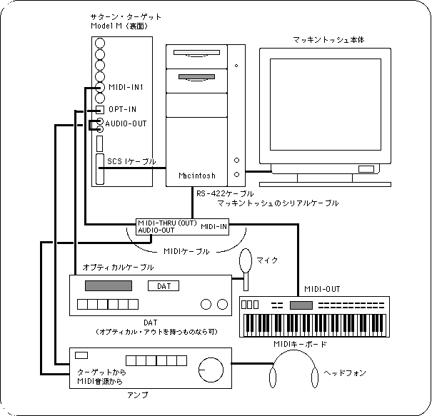

Return to menu | Go to next page

Sound Tutorial
Prepare the environment
This chapter explains how to connect the hardware to use Sega Sound Tool.
Sound production requires a Macintosh.
The following figure shows the equipment configuration with a focus on the SEGA sound tool.
If you use a commercially available tool such as AUDIOMEDIA II, the connection will be slightly different, but it will be omitted in this chapter.
Figure 1-1 Equipment configuration when using Sega Sound Tool

Preparing the equipment
- You can create a song without a MIDI sound source, but it will be a lot of work, so we recommend using it.
- Use a MIDI interface for MIDI sound sources that do not have a connection to the Macintosh.
In addition to DAT, MD and CD players can be connected to
- Digital In.
Return to menu | Go to next page